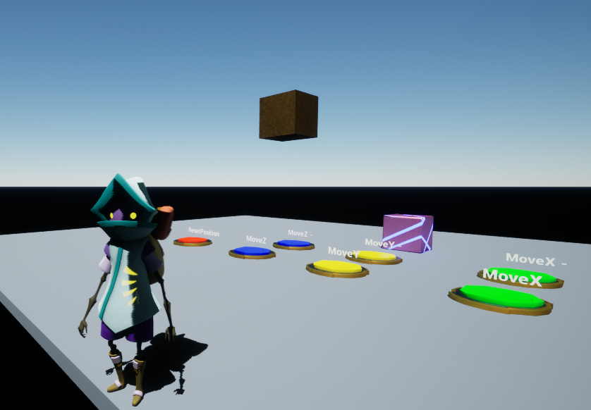

Unreal Engine 5 Learning Courses
Here you will learn the basics of Unreal Engine and explore a few of the basic skills needed for Game Development.
Hello! My name is Julien Bastin and I am a full stack developer. I am passionate about new technologies and computers in general. With a leadership spirit, I am eager to learn new things and use the latest innovations.
Here you will learn the basics of Unreal Engine and explore a few of the basic skills needed for Game Development.
🇬🇧 English B2
🇫🇷 French C2
Tech stack: HTML5 / CSS / TypeScript / Angular / Java / Springboot / Kubernetes
This video displays a demonstration of a real-time person tracking device using sonar equipment. This work was done with Guillaume Neirinckx in the context of our master's thesis supervised by Peter Van Roy and Igor Kopestenski at UCLouvain during the 2019-2020 academic year. This work was presented during a talk given by Peter Van Roy on Aug. 23, 2020 at the Erlang Workshop 2020 (colocated with ICFP 2020). The talk slides are available here and our master's thesis text is available here below.
Github repositories :

Small project to learn game development with Unreal Engine. This project was created after the completion of the first part of the tutorial Welcome to Unreal Engine - First hour in Unreal Engine 4
The goal of the level is to move the pink block from the ground into the golden area using some buttons.
Access the project on github.